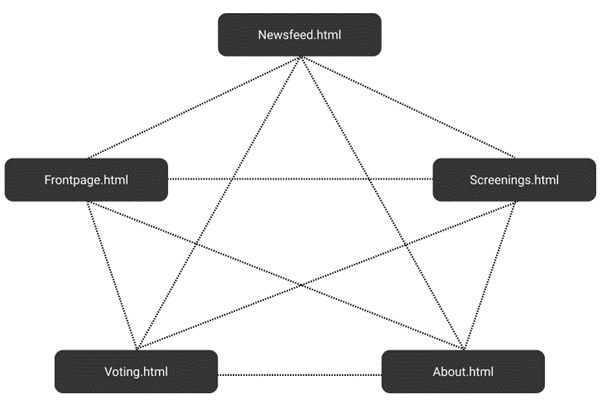
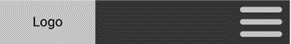
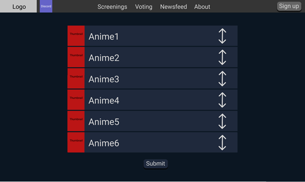

Maja Sung Hee Jenssen, Tobias Carl Axel Fall Jakobsen,
Aleksander Knutsen, Sondre Haugen Elgaaen
04.10.2020
About the client
Client: The client is Anime NTNU
Contact person: Bernt Johan Damslora, previous leader of Anime
NTNU
Anime NTNU is a student organization for people fond of anime
(Japanese animation). They host open screenings of anime at
Gløshaugen weekly.
Purpose, goals, and audience
The purpose of this website is to promote Anime NTNU and recruit
new members. It should be easier for potential new members, as
well as established members, to look up screenings. The website
should also have a clear layout and be made in such a way that
it is intuitive to use by both old and new members. In this
context, the website should provide a good solution for sorting
the information being displayed on the website.
The audience is all people fond of or curious about anime. As
Anime NTNU is a voluntary student organization at NTNU, the main
portion of the audience will consist of students at NTNU. Most
visitors will therefore be young, which means we can keep the
font size small in favor of other content. Furthermore, those
who visit the website are most likely looking for information
about Anime NTNU itself or their screenings. This is why we have
made the decision of having a front page with different
elements, showcasing the information that would be the most
relevant for the audience. Lastly, Anime NTNU has a record of
attracting international students and the site will therefore be
made in English.
Navigation structure
The navigational structure of the new Anime NTNU website is
visualized in figure 1. Initially, the first page one can see
when visiting Anime NTNU’s website is the frontpage. And from
here, the visitor will be able to access all of the pages
included in the website. This is possible through the use of a
navbar. In addition, the visitor will be able to go back to the
front page from every page by clicking on the logo in the
navbar.
We chose to implement this type of interactive design because we
wish to give the visitor as much freedom as possible within the
website. We also wish to encourage visitors of Anime NTNU to
further check out specific content on the website. For example,
from the front page the visitor will be able to see the time and
date, as well as the title of the anime which will be showcased
on the next screening hosted by Anime NTNU. If the visitor
clicks on the featured screening, the visitor will be redirected
to the screenings page. If the visitor does not click on the
featured screening but becomes curious about other future
screenings, the visitor can easily access this type of
information by interacting with the navbar.

Figure 1: Navigation structure
Page layout and appearance
We have tried coming up with an universal design which will be
applied to all the pages on the website. Both the design and
choice of styling was made in collaboration with our client. We
made a tentative design and were able to receive immediate
feedback from our client stating his opinions. We then
implemented changes from the suggestions he proposed.
Since Anime NTNU is catering towards a younger audience, we made
some specific design choices which we think results in a website
that has a clean layout and a friendly user interface. This will
greatly affect how much the visitors will be using the website
as well as how much time they will want to spend on the website.
The main color scheme of the website is fairly dark, with the
text having an offset white color. As we are expecting a younger
audience we believe a website with such a color palette will
make for a better viewing experience, especially with dark-mode
being a popular and widely used feature amongst young people
nowadays. This also goes well with the mood Anime NTNU wishes to
convey through their website.
Universal styling
Font header: Open Sans, Verdana
Font body: Open Sand, Verdana
Main color scheme
Background color body: #0B1622
Background color content: #1F293C
Text: #D9D9D9
Navigation bar
Background color: #353535
Background color of active page: #202020
Text: #D9D9D9
Responsive navigation bar
Background color of interactive elements
(discord link and popup): #1F293C
Links
Unvisited: Text has slightly darker color than rest
of the text, thin (color) underline
Visited: No difference from unvisited
Hover: Bold (color) text, no underline
Active (the moment it is clicked)
Content
Front page
The front page is the first page the visitor sees when they
visit the website. The content consists of three separate
sections as shown in figure 2. The section on top is a
textbox containing a bit of information about Anime NTNU and
welcoming the visitor to their website. The section on the
left side of the screen will showcase the latest news from
the newsfeed page, and the section on the right side of the
screen will showcase upcoming screenings from the screenings
page. The sections will have a blue background color
(#1F293C) that is lighter than the color of the main body.
We want this content to be available from the front page as
this is the type of information we expect most visitors will
be interested in. It might also make the visitor curious
about the rest of the website, and prompt them to check out
other pages. We want the website to have a clear and
intuitive design that prompts the visitor to explore and
interact with the different pages.
Figure 2: Front page
Navigation bar
The navigation bar will be placed at the top of the screen
of each page on the website. From here, the visitor can
easily navigate between the different pages, fulfilling the
purpose of visitors wishing to view more information about
particular topics not shown on the front page. On the far
left of the navigation bar there will be a logo representing
Anime NTNU which can be clicked on to navigate the visitor
back to the front page. Our client has also requested there
to be a clickable link which redirects the user to Anime
NTNU’s discord server. The client specifically wished for
this link to be available from the navigation bar. The link
will be displayed as an interactive picture. The client also
wanted there to be a feature which lets the visitor sign up
to become a member of Anime NTNU. This feature will be
implemented as a button (as shown in figure 3) that OnClick
opens a pop-up form prompting the visitor to submit an
username and a password. Both the interactive discord
picture and the sign up button is placed in the navigation
bar because we want the visitor to be able to reach these
features easily whenever and wherever from the website.
Figure 3: Navigation bar
Figure 4 shows how the navigation bar will look when the
visitor is on a specific page that is not the front page.
The visitor will be able to receive visual feedback on where
they are through a slightly darker background color
(#202020) on the active page.
Figure 4: Selected page on navigation bar
Mobile-responsive version of header
Although there is no requirement for a mobile version of the
website, we have created a mockup-image displaying how the
navigation bar will look on a mobile device. For devices
with smaller screens such as a mobile, the navigation bar
will be interactive through a sandwich menu. To keep the
navigation bar clean and spaced, we will only display the
logo and the sandwich menu to begin with. By clicking on the
sandwich menu, the links to the pages and features will be
rolled over as shown in figure 6.

Figure 5: Initial navigation barFigure 6: Rollover navigation bar
To differentiate between links that redirects the visitor to
different pages on the website and other interactive links,
we have chosen to give the interactive links a different
background color (#1F293C).
Figure 7: Selected page on rollover navigation bar
"Become a member"-button
As previously stated, there will be a “sign up” button on
the navigation bar which OnClick opens up a form. This form
will use the same color scheme as the pages on the website.
The pop-up form will have two fields the visitor must fill
out in order to submit their application to become a member
of Anime NTNU. If the visitor clicks on the “sign up” button
but does not want to sign up after all, the visitor should
be able to close the pop-up by clicking on the “X” in the
upper right corner.
Figure 8: Visualisation of the pop-up form displayed
when clicking on the sign-up button
Newsfeed
On this page the visitor will be able to look up news items
posted by the moderators of Anime NTNU. The news items may
contain exciting announcements or information about
situations affecting Anime NTNU. Thus this page is meant to
keep both old and new members up to date with the current
events. All news items will display the name of the author
and the date the post was made. The most recently posted
news item will also be displayed on the front page by the
use of a Javascript function.
Figure 9: Newsfeed page
Screenings
From the screenings page the visitor will be able to view
all upcoming screenings hosted by Anime NTNU. As there might
be several screenings scheduled for the same day, the
screenings will be grouped together in a list format. Each
planned screening-session will contain information about the
date, time, and location of the screening, making this
important piece of information easily viewable. All the
planned screenings on the page will have a thumbnail picture
of said screening. This thumbnail picture can be clicked on
to display additional information about the anime.
When clicking on a thumbnail picture on the screenings page,
a pop-up box containing additional information about that
screening will be displayed. This pop-up box contains the
name of the anime being screened, the thumbnail picture, and
a general description of the anime. This feature will be
implemented through a Javascript function. When the visitor
is finished reading about the anime, they can exit the
pop-up by clicking on the “X” in the upper right corner.
Figure 13: Pop-up box containing detailed information
about the anime being screened
Voting
The voting page is the page where the visitor will be able
to cast their vote to decide which animes will be screened
the upcoming semester. Throughout the semester, the visitors
will be able to rearrange a list of animes according to
which anime they would like to watch the most. The animes in
the list is a selection made by Anime NTNU. The list will
have a drag and drop feature, making it possible for the
viewer to easily drag animes to the correct position in the
list. The result can then be submitted to Anime NTNU through
a “submit” button. The voting page is an important part of
the new Anime NTNU website as it enables Anime NTNU to
adjust the screenings according to the visitors interests.
This might also help Anime NTNU increase their member base
and amount of visitors as they will be able to get valid
feedback on what people actually want to watch.

Figure 14: Voting page
About
Figure 15: About page
Minimum requirements
Screenings - This script will perform a function which
retrieves the title and date of a particular screening in
screenings.html and shows it on the frontpage.
Vote - On the voting page there will be a list with names of
different animes the visitor can re-arrange in order to send
AnimeNTNU feedback about what they would like to see in the
upcoming semester. This list will contain items which will
have a drag and drop feature.
"Become a member"-button - In the navbar there will be a
button which OnClick will open up a pop-up window. This
pop-up window will contain two fields, for signing up with
an username and a password, making it possible to sign up as
a member.
Pop-up information - A function that creates a pop-up
window. When clicking on a box containing an anime it will
display more information about the chosen anime. The pop-up
should create a grey overlay over the rest of the page.
There should be an exit button that closes the pop-up.
Latest news - This script will retrieve the latest post in
newsfeed.html and show it on the frontpage.
Plan
We have created a tentative organizational scheme to create and
store our files, as well as a work division table to assign
people tasks and keep track of internal deadlines.
Organizational scheme
All of the following files will be in a common folder which will
be created when we start on part 3 - project coding - of the
project.
about.html
frontpage.html
newsfeed.html
screenings.html
voting.html
css
master.css
images
logo.png
thumbnail_1.png
thumbnail_2.png
thumbnail_3.png
thumbnail_4.png
thumbnail_5.png
modularity
navigation_bar.part
scripts
showScreenings.js
voting.js
becomeMember.js
popupNotification.js
Work division and deadlines
Filename
Description
In charge
Deadline
frontpage.html
The homepage
Aleksander
15.10.2020
newsfeed.html
News items with information about Anime NTNU,
written by the moderators of the page
Tobias
15.10.2020
screenings.html
Calendar information about screenings hosted by
Anime NTNU
Sondre
15.10.2020
voting.html
A list of series the visitor can rank according to
what the visitor would like to see the most during
the upcoming semester
Maja
15.10.2020
about.html
Information about Anime NTNU and how to contact the
organization
Sondre
15.10.2020
navigation_bar.part
Maja
15.10.2020
logo.png
Logo for the header
Aleksander
15.10.2020
showScreenings.js
A script to fetch and display screenings on the
front page
Sondre
31.10.2020
voting.js
A script to implement a drag and drop list
Maja
31.10.2020
becomeMember.js
A script to display a pop-up window for signing up
as a member
Tobias
31.10.2020
popupNotification.js
A script to create a pop-up window displaying more
information about a chosen anime
Aleksander
31.10.2020
master.css
The CSS file containing all the styling for the
website